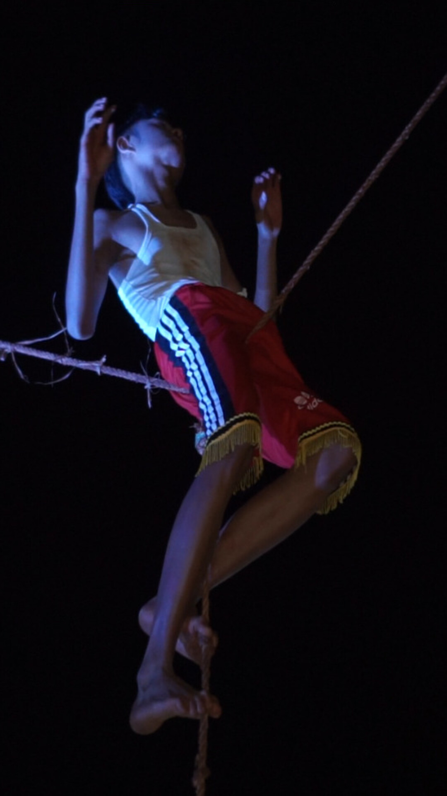
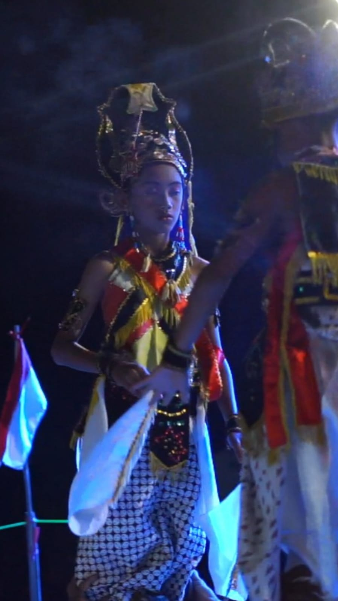
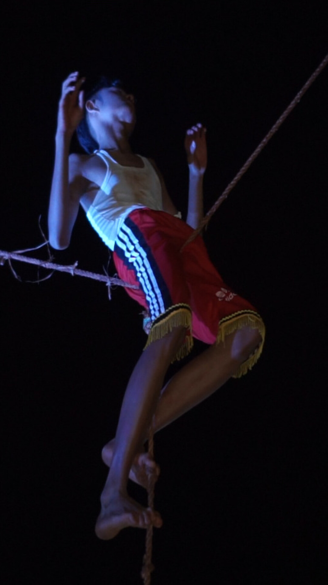
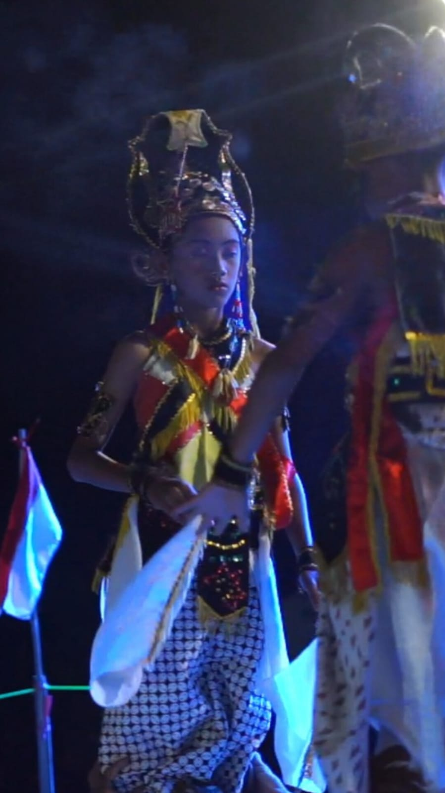

Wonderfull Indonesia
- Email : wonderfulindonesia@gmail.com
- Phone: +6285747036754
Tuban,
62310
Jawa Timur
Merupakan bagian akhir pertunjukan yang menampilkan salah satu anak sandur yang tidak sadarkan diri yang akan di bawa ke gagar mayang maka nanti penari akan menari di seutas tali yang di rentangkan di atas pancang bambu

Bancikan adalah adegan yang menceritakan tentang kehidupan dari kecil sampek dewasa yang di mulai dari bancik dhengkul hingga bancik pundhak
Nyetri adalah ritual slmetan yang di pimpin tukang tanduk yang bertujuan untuk pertunjukan agar berjalan lancar
Kesenian sandur Tuban tidak jauh berbeda dengan ludruk yang ada di Surabaya. Bedanya, kesenian sandur bercerita tentang pertanian lokal yang ada di Tuban. Kata sandur berasal dari kata san (isan) yang berarti ‘selesai panen dan dhur (ngedhur) yang berarti ‘sampai habis’. Pada awalnya, kesenian sandur menjadi media hiburan bagi masyarakat agraris yang telah bekerja di sawah yang kemudian berkembang sebagai kesenian yang disakralkan. Sandur bercerita mengenai aktivitas pertanian berurutan dari mengolah tanah hingga memanen hasil pertanian. .
Kesenian yang memiliki empat tokoh bernama Balong, Pethak, Cawik dan Tangsil ini, diperankan oleh empat anak muda yang belum dikhitan. Hal tersebut dikarenakan anak yang belum dikhitan belum memiliki dosa dan dianggap suci. Bahasa yang digunakan dalam kesenian Sandur adalah bahasa Jawa Ngoko dan sedikit bahasa Jawa Krama. Pada saat pertunjukan ini berlangsung, pemeran akan berputar searah jarum jam di tanah lapang. Unsur dalam sandur ini terdapat tarian, karawitan, dan beberapa parikan dhandhanggula dan cangkriman yang berisi tentang nasehat dan petuah bagi masyarakat bahwa kita hidup di dunia ini berdampingan dengan alam dan makhluk lainnya. Sebagai makhluk sosial sepatutnya untuk saling menghormati dan tidak hidup semana-mena, sombong dan selalu mawas diri dalam melakukan segala hal di dunia
 




Tuban,
62310
Jawa Timur